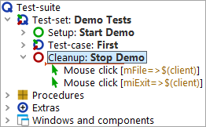

| Version 6.0.3 |
The only thing missing now is a cleanup sequence closing down the SUT.
There are usually various ways to terminate an SUT, e.g. clicking the close button of the application window, pressing ALT-F4 or via the menu action »File«-»Exit«. All these options can be directly recorded and then used in the clean-up sequence.
Let's use the last one. So please perform the following steps.
Note The cleanup node can only be dragged and dropped to the test-set if the test-set's last child node is collapsed. To expand or collapse a node during a drag and drop operation, hold your cursor over the triangle next to the node.
You should end up with the following:
|
|  | ||
|
| Figure 2.14: The simple cleanup sequence | ||
By this we have finished with the basic steps of structuring our suite.
| Last update: 9/6/2022 Copyright © 2002-2022 Quality First Software GmbH |